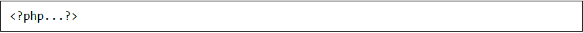
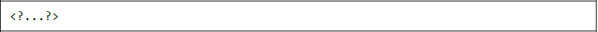
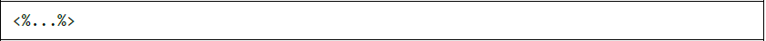
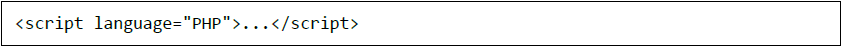

PHP Syntax Overview
Escaping PHP

The photo above shows the universally PHP tag that is usually used.

For PHP to be familiar with the tags you use, you must either use two of the following: (a) Look for --enable-short-tags configuration when building PHP or (b) Go to your php.inl file and turn on the short_open_tag

ASP tags are used to delineate code blocks. Set the configuration of the ASP tags when you open php.inl

Commenting PHP Code
Single-line comments are used if you are explaning your script i=on a sngle line. Sysmbols used to define a single-line commen are: (a) # and (b) //.
Muti-lines printing are comments that prints lines in a single print statement
These are comments that more dtailed explanations about yor script. Multi-line comment in PHP is similar to when you program in C language.
WHITESPACE insensitive
PHP whitespace almost never matters to how many whitespaces character you have in a row.